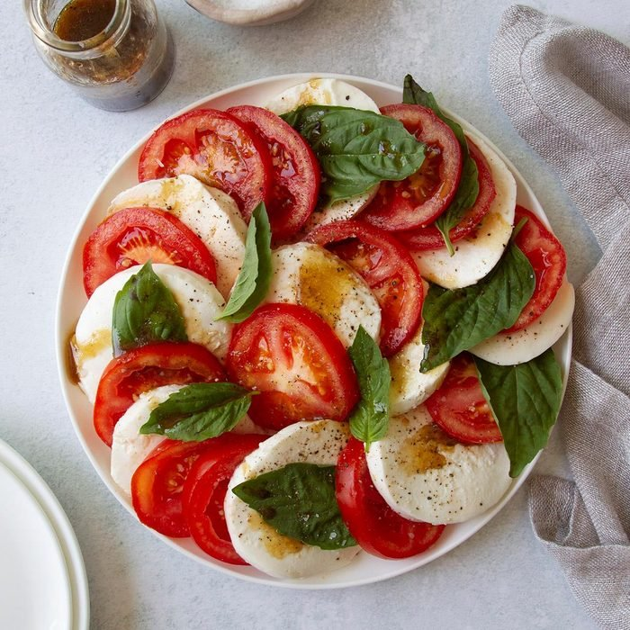

The Caprese Salad

A Fresh, Flavorful Vacation!
Learn to make this traditional salad in no time.
Ingredients:
- 4 medium tomatoes, sliced
- 1/4 cup fresh basil leaves
- 1/2 pound fresh mozzarella cheese, sliced
Balsamic Vinaigrette:
- 2 tablespoons olive oil
- 2 tablespoons balsamic vinegar
- 1 teaspoon ground mustard
- 1/8 teaspoon salt
- 1/8 teaspoon pepper
Steps:
- Arrange the tomatoes, cheese and basil on a serving platter. Whisk the vinaigrette ingredients; drizzle over salad. If desired, sprinkle with additional salt and pepper.